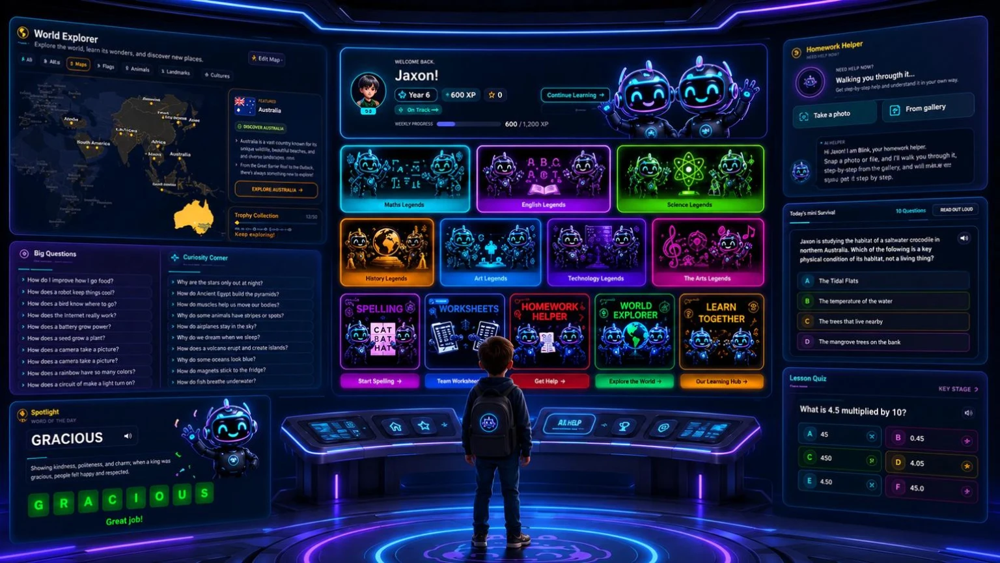
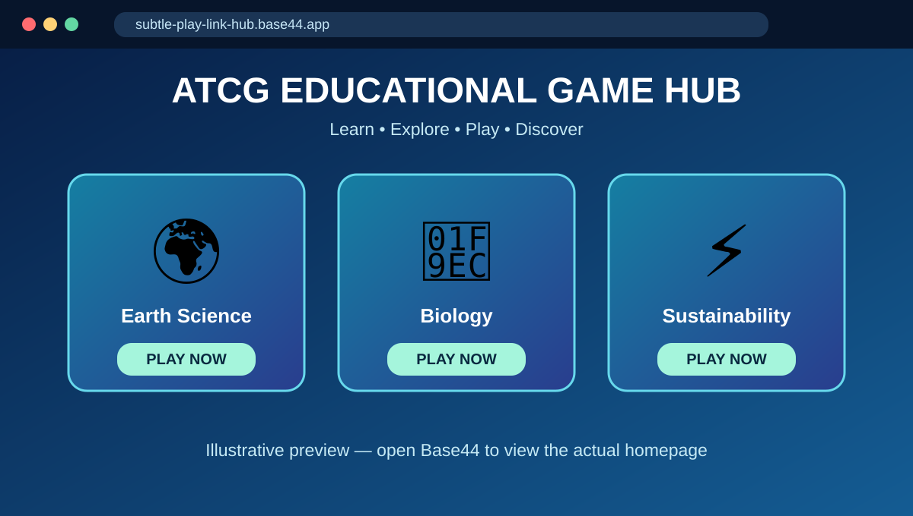

AUTO-ANIMATED PREVIEW
🏝️ Survivor: Eco Island
Compete in ecology and survival challenges, win immunity, cast secret votes, eliminate rivals and crown a champion. Solo or local group play.
▶ Play Full 21-Player Season
SCIENCE SIMULATION Hover or click to investigate →Drive through an original 3D-style city, explore eight mission districts, solve real-world STEM and community challenges, earn XP and become a City Visionary. Keyboard and touch driving controls, animated day/night lighting, saved progress and instant mission play.
▶ PLAY FUTURE CITY NOWOriginal educational 2.5D browser prototype. Not affiliated with Grand Theft Auto or Rockstar Games; not a photorealistic AAA title.
Animated scenes play automatically. Tap Play Now for real interactive classroom strategy challenges.
Compete in ecology and survival challenges, win immunity, cast secret votes, eliminate rivals and crown a champion. Solo or local group play.
▶ Play Full 21-Player SeasonWin leadership, nominate houseguests, compete for safety, cast eviction votes and choose a winner. Solo or local group play.
▶ Play Full 17-Player Season📅 View proposed December group challenges, event times and local sign-up
Original educational games inspired by competition formats; not affiliated with the television franchises. Animated previews are illustrations; the playable competitions include voting, eliminations and winners.
Animated previews begin automatically when this page opens. Tap any game to launch its actual interactive Base44 app.
Tap the illustrated homepage preview below to open the original Base44 Game Hub.

The moving scenes above are automatic visual previews, not recordings of actual game play. Actual Base44 games run when launched. The image is an illustrative fallback, not an exact screenshot of the live Base44 homepage.
Learn. Play. Challenge Yourself.
Free Biology • Earth Science • History Games
▶ Play a free demo nowBrowse learning gamesExplore recent environmental events reported in 2026, then launch a related science game. Illustrations are educational artwork, not documentary photographs.
Explore how rapid water movement changes downstream ecosystems.
Investigate temperature, drought and ecosystem resilience.
Experiment with water cycles and flood conditions.
Explore how rainfall changes can affect food webs and farming.
Build a renewable-energy city and weigh sustainability trade-offs.
Explore the movement of moisture, precipitation and runoff.
Stories selected November 21, 2026. Learning simulations are simplified models, not reconstructions of the events. Sources: World Meteorological Organization, United Nations, WaterAid and reporting on US storms.
Choose a picture. One tap launches a playable activity or connected game site.
Free preview activities. Some buttons open a collection where you select a mission. Base44 content remains on its original website.
Explore the original Base44 game hub, the independent science adventures, and the population simulator. Your GitHub Academy is the central launch point.
Four interactive sustainability adventures: Solar City Architect, Coastal Ecosystem Rescue, Cell Membrane Mission, and Sustainable Farm Simulator.
Play Mission Control →Six hands-on science missions: Wetland Rescue, Enzyme Reactor, Climate Control, Water Cycle Builder, Food Web Survival, and Science Escape Mission. Earn XP and badges.
Launch Simulation Lab →Choose a course and explore its learning sequence. Unit names below are learning pathways; exact DPS pacing and standards alignment are pending verification.
Biochemistry → Cells & Transport → Genetics → Evolution → Ecology
Start Cell Transport LabSun & Earth Systems → Geosphere → Hydrosphere & Atmosphere → Biosphere → Human Impact & Sustainability
Explore Earth Science SimulationsExplore curriculum themes by grade, state, subject and activity.
Browse Unit ThemesFree practice. No student accounts or personal information required.
Starter question sets are original samples; classroom question banks can be added later.